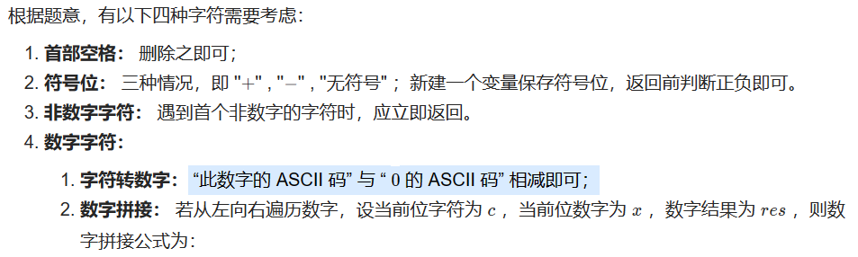
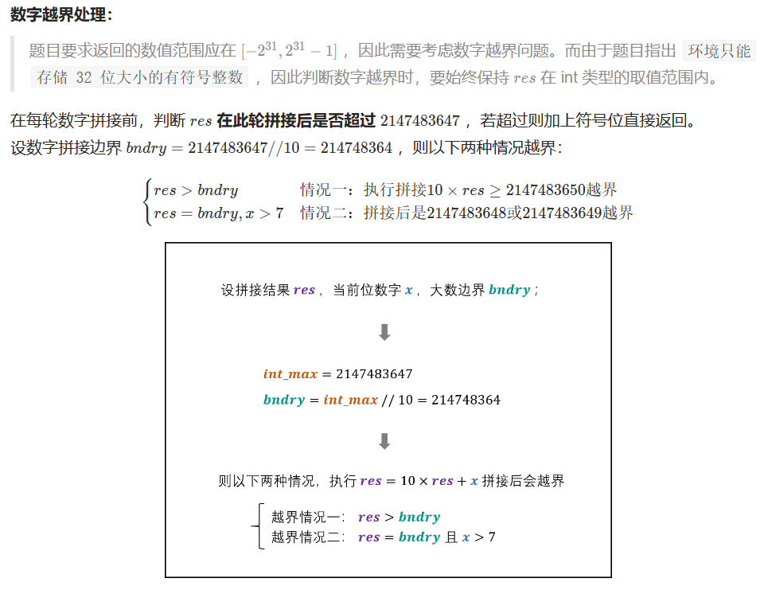
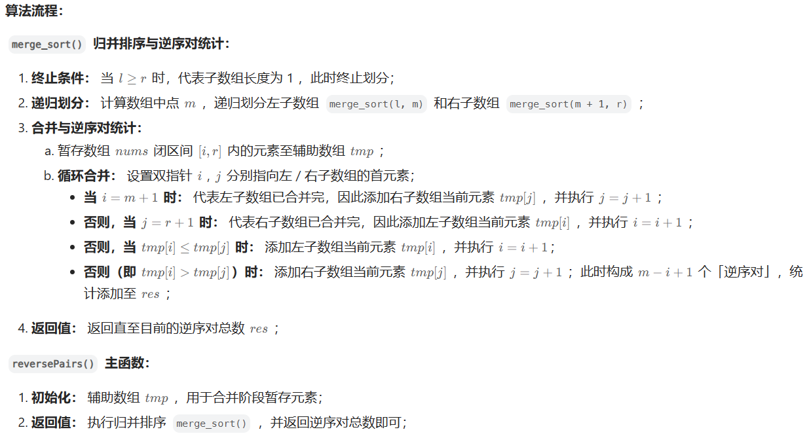
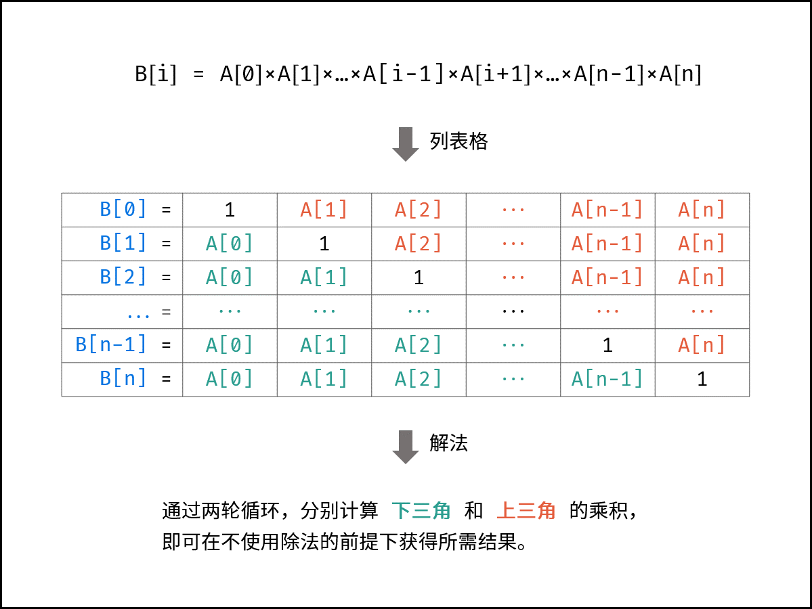

剑指offer¶

数据结构¶
数组和字符串是两种最基本的数据结构，它们用连续内存分别存储数字和字符。 链表和树是面试中出现频率最高的数据结构。由于操作树需要操作大量的指针，应聘者在解决相关问题的时候一定要留意鲁棒性，否则容易出现程序崩溃的问题。 栈是一个与递归紧密相关的数据结构，同样队列也与广度优先遍历算法紧密相关，深刻理解这两种数据结 构能帮助我们解决很多算法问题。
数组¶
为了解决数组空间效率不高的问题，人们又设计实现了多种动态数组，比如C++的STL 中的 vector。为了避免浪费，我们先为数组开辟较小的空间，然后往数组中添加数据。当数据的数目超过数组的容量时，我们再重新分配一块更大的空间(STL的 vector 每次扩充容量时，新的容量都是前一次的两倍)，把之前的数据复制到新的数组中，再把之前的内存释放，这样就能减少内存的浪费。但我们也注意到每一次扩充数组容量时都有大量的额外操作，这对时间性能有负面影响，因此使用动态数组时要尽量减少改变数组容量大小的次数。
当我们声明一个数组时，数组的名字也是一个指针，该指针指向数组的第一个元素。C/C++没有记录数组的大小，因此在用指针访问数组中的元素是，要确保没有超出数组的边界。
输出“20,4,4”
data1是一个数组，sizeof(data1)是求数组的大小，数组包含5个整数，每个整数4字节，一共20字节
data2声明为指针，32位系统上，对任意指针求sizeof，得到的结果都是4
C/C++中，数组最为函数的参数进行传递时，数组会自动退化成同类型的指针，所以size3也为4
3 、数组中重复的数字¶
方法一：哈希表¶
class Solution {
public:
int findRepeatNumber(vector<int>& nums) {
//哈希表记录数组中的各个数字
unordered_map<int, bool> map;
//遍历数组nums中的每个数字num
for (auto num : nums) {
//当num在哈希表中，说明重复，直接返回num
if (map[num]) {
return num;
}
//将num添加至哈希表中
map[num] = true;
}
return -1;
}
};
第2次：¶
class Solution {
public:
int findRepeatNumber(vector<int>& nums) {
unordered_set<int> s;
for(int i=0;i<nums.size();i++){
if(s.count(nums[i])==0){
// cout<<nums[i];
s.insert(nums[i]);
// cout<<*s.begin();
}
else{
// cout<<nums[i];
return nums[i];
}
}
return -1;
}
};
4、二维数组中的查找¶
方法一：标志数¶
从左下角开始找
class Solution {
public:
bool findNumberIn2DArray(vector<vector<int>>& matrix, int target) {
int i = matrix.size() - 1;
int j = 0;
while (i >= 0 && j <matrix[0].size()) {
//如果当前值大于target，则target一定在当前值的行上方，--i消去当前行
if (matrix[i][j] > target) {
--i;
}
//当前值小于target，则target一定在当前值的列右方，++j消去当前列
else if (matrix[i][j] < target) {
++j;
}
else {
return true;
}
}
return false;
}
};
字符串¶
5、替换空格¶
方法一：原地修改¶
- 初始化：空格数量 count ，字符串 s 的长度 len ；
- 统计空格数量：遍历 s ，遇空格则 count++ ；
- 修改 s 长度：添加完 "%20" 后的字符串长度应为 len + 2 * count ；
- 倒序遍历修改：i 指向原字符串尾部元素， j 指向新字符串尾部元素；当 i = j 时跳出（代表左方已没有空格，无需继续遍历）； 1）当 s[i] 不为空格时：执行 s[j] = s[i] ； 2）当 s[i] 为空格时：将字符串闭区间 [j-2, j] 的元素修改为 "%20" ；由于修改了 3 个元素，因此需要 j -= 2 ；
- 返回值：已修改的字符串 s ；
class Solution {
public:
string replaceSpace(string s) {
int count = 0, len = s.size();
// 统计空格数量
for (char c : s) {
if (c == ' ') count++;
}
// 修改 s 长度
s.resize(len + 2 * count);
// 倒序遍历修改
for (int i = len - 1, j = s.size() - 1; i < j; i--, j--) {
if (s[i] != ' ')
s[j] = s[i];
else {
s[j - 2] = '%';
s[j - 1] = '2';
s[j] = '0';
j -= 2;
}
}
return s;
}
};
58、左旋转字符串¶
方法1：三次反转（leetcode上可过，牛客上过不了）¶
class Solution {
public:
string reverseLeftWords(string s, int n) {
reverse(s.begin(), s.begin() + n); //反转区间为前n的子串
reverse(s.begin() + n, s.end()); //反转区间为n到末尾的子串
reverse(s.begin(), s.end()); //反转整个字符串
return s;
}
};
第2次：牛客上可过¶
#include <algorithm>
class Solution {
public:
/**
* 代码中的类名、方法名、参数名已经指定，请勿修改，直接返回方法规定的值即可
*
*
* @param str string字符串
* @param n int整型
* @return string字符串
*/
string LeftRotateString(string str, int n) {
if(str.size()==0) return "";
n = n % str.size();
// write code here
reverse(str.begin(), str.begin()+n);
reverse(str.begin()+n, str.end());
reverse(str.begin(), str.end());
return str;
}
};
链表¶
6、从尾到头打印链表¶
方法一：栈¶
后进先出，可以选择栈作为数据结构
class Solution {
public:
vector<int> reversePrint(ListNode* head) {
ListNode* temp = head;
stack<int> s;
vector<int> v;
while (temp != nullptr) {
s.push(temp->val);
temp = temp->next;
}
while (!s.empty()) {
v.push_back(s.top());
s.pop();
}
return v;
}
};
JZ6 从尾到头打印链表
class Solution {
public:
vector<int> printListFromTailToHead(ListNode* head) {
if(head==nullptr){
return {};
}
vector<int> ans;
while(head){
ans.insert(ans.begin(), head->val);
head=head->next;
}
return ans;
}
};
24、反转链表¶
方法一：迭代¶
class Solution {
public:
ListNode* reverseList(ListNode* head) {
ListNode* cur = head;
ListNode* pre = nullptr;
while (cur) {
ListNode* temp = cur->next;
cur->next = pre;
pre = cur;
cur = temp;
}
return pre;
}
};
24、合并两个排序的链表¶
方法一：递归¶
class Solution {
public:
ListNode* mergeTwoLists(ListNode* l1, ListNode* l2) {
if (l1 == nullptr) {
return l2;
}
else if (l2 == nullptr) {
return l1;
}
if (l1->val < l2->val) {
l1->next = mergeTwoLists(l1->next, l2);
return l1;
}
else {
l2->next = mergeTwoLists(l1, l2->next);
return l2;
}
}
};
52、两个链表的第一个公共结点¶
方法一：双指针¶
class Solution {
public:
ListNode* getIntersectionNode(ListNode* headA, ListNode* headB) {
ListNode* curA = headA;
ListNode* curB = headB;
while (curA != curB) {
curA = curA ? curA->next : headB;
curB = curB ? curB->next : headA;
}
return curA;
}
};
II 22、链表中环的入口结点¶
方法一：哈希表¶
class Solution {
public:
ListNode* detectCycle(ListNode* head) {
unordered_set<ListNode*> uset;
ListNode* cur = head;
while (cur != nullptr) {
//一旦遇到了此前遍历过得结点，说明有环，并返回该结点
if (uset.count(cur)) {
return cur;
}
uset.insert(cur);
cur = cur->next;
}
return nullptr;
}
};
22、链表中倒数第k个结点¶
方法一：双指针¶
- 后一个指针先走k步
- 然后两个指针一起走，直到后一个指针为空
- 返回前一个指针
class Solution {
public:
ListNode* getKthFromEnd(ListNode* head, int k) {
ListNode* former = head, * latter = head;
for (int i = 1; i <= k; ++i) {
latter = latter->next;
}
while (latter != nullptr) {
latter = latter->next;
former = former->next;
}
return former;
}
};
JZ22 链表中倒数最后k个结点¶
多了链表长度小于k，则返回一个长度为0的链表
/**
* struct ListNode {
* int val;
* struct ListNode *next;
* ListNode(int x) : val(x), next(nullptr) {}
* };
*/
class Solution {
public:
/**
* 代码中的类名、方法名、参数名已经指定，请勿修改，直接返回方法规定的值即可
*
*
* @param pHead ListNode类
* @param k int整型
* @return ListNode类
*/
ListNode* FindKthToTail(ListNode* pHead, int k) {
// write code here
ListNode* p1=pHead;
ListNode* p2=pHead;
for(int i=0;i<k;i++){
if(p1!=nullptr){
p1=p1->next;
}
else{
return nullptr;
}
}
while(p1!=nullptr){
p1=p1->next;
p2=p2->next;
}
return p2;
}
};
18、删除链表的结点¶
方法一：两个指针¶
- 特例处理： 当应删除头节点 head 时，直接返回 head.next 即可。
- 初始化：
pre = head,cur = head.next。 - 定位节点： 当 cur 为空 或 cur 节点值等于 val 时跳出。
- 保存当前节点索引，即
pre = cur。 - 遍历下一节点，即
cur = cur.next。 - 删除节点： 若
cur指向某节点，则执行pre.next = cur.next；若cur指向null，代表链表中不包含值为val的节点。 - 返回值： 返回链表头部节点
head即可
class Solution {
public:
ListNode* deleteNode(ListNode* head, int val) {
if (head->val == val) {
return head->next;
}
ListNode* cur = head, * pre = head;
while (cur->next != nullptr && cur->val != val) {
pre = cur;
cur = cur->next;
}
if (cur != nullptr) {
pre->next = cur->next;
}
return head;
}
};
第2次¶
class Solution {
public:
ListNode* deleteNode(ListNode* head, int val) {
ListNode* dummy=new ListNode();
dummy->next=head;
ListNode* cur=head;
ListNode* pre=dummy;
while(cur!=nullptr){
if(cur->val==val){
pre->next=cur->next;
break;
}
pre=pre->next;
cur=cur->next;
}
return dummy->next;
}
};
哈希表¶
剑指 Offer II 004. 只出现一次的数字¶
方法1：很慢的哈希表¶
class Solution {
public:
int singleNumber(vector<int>& nums) {
unordered_map<int, int> umap;
for(int i=0;i<nums.size();i++){
umap[nums[i]]++;
}
for(auto num:nums){
if(umap[num]==1){
return num;
}
}
return -1;
}
};
56 - II. 数组中数字出现的次数 II¶
剑指 Offer 56 - II. 数组中数字出现的次数 II - 力扣（LeetCode）
class Solution {
public:
int singleNumber(vector<int>& nums) {
unordered_map<int,int> umap;
for(auto num:nums) umap[num]++;
int ans;
for(auto pr:umap){
if(pr.second==1){
ans=pr.first;
}
}
return ans;
}
};
JZ53 数字在升序数组中出现的次数¶
方法1：可以过，但是不符合logn¶
class Solution {
public:
int GetNumberOfK(vector<int>& nums, int k) {
// write code here
unordered_map<int, int> umap;
for(auto num:nums) umap[num]++;
return umap[k];
}
};
方法2：二分查找，因为是排序数组¶
class Solution {
public:
int GetNumberOfK(vector<int>& data, int k) {
// write code here
int low=0;
int high=data.size();
int mid=0;
int num=0;
if(data.size()==0) return 0;
while(low<=high){
mid=(high+low)/2;
if(data[mid]>k){
high=mid-1;
}
else if(data[mid]<k){
low=mid+1;
}
else{
num=1;
//从右边开始找有几个数等于k
int tmp=mid+1;
while(data[tmp]==k){
num++;
tmp++;
if(tmp>data.size()) break;
}
//从左边开始找有几个等于k
tmp=mid-1;
while(data[tmp]==k){
num++;
tmp--;
if(tmp<0) break;
}
break;
}
}
return num;
}
};
35. 复杂链表的复制¶
方法1：哈希表¶
本题要求我们对一个特殊的链表进行深拷贝。如果是普通链表，我们可以直接按照遍历的顺序创建链表节点。而本题中因为随机指针的存在，当我们拷贝节点时，「当前节点的随机指针指向的节点」可能还没创建
/*
// Definition for a Node.
class Node {
public:
int val;
Node* next;
Node* random;
Node(int _val) {
val = _val;
next = NULL;
random = NULL;
}
};
*/
class Solution {
public:
Node* copyRandomList(Node* head) {
if(head==nullptr) return nullptr;
// 复制各节点，并建立 “原节点 -> 新节点” 的 Map 映射
unordered_map<Node*, Node*> map;
Node* cur=head;
while(cur!=nullptr){
map[cur]=new Node(cur->val);
cur=cur->next;
}
cur=head;
// 构建新节点的 next 和 random 指向
while(cur!=nullptr){
map[cur]->next=map[cur->next];
map[cur]->random=map[cur->random];
cur=cur->next;
}
// 返回新链表的头节点
return map[head];
}
};
39、数组中出现次数超过一半的数字¶
class Solution {
public:
int majorityElement(vector<int>& nums) {
unordered_map<int, int> umap;
int len=nums.size();
for(int i=0;i<len;i++){
umap[nums[i]]++;
if(umap[nums[i]]>(len/2)) return nums[i];
}
return NULL;
}
};
栈与队列¶
59 - I. 滑动窗口的最大值¶
deque中，最前面的总是最大的
class Solution {
public:
vector<int> maxSlidingWindow(vector<int>& nums, int k) {
vector<int> result;
int len =nums.size();
if(len==0 || k==0 || k>len) return result;
//deque 中存储的是num的下标
deque<int> que;
for(int i=0;i<len;i++){
//当前值比队列从后往前的大，成为下一个待选值
while(!que.empty() && nums[que.back()]<nums[i]){
que.pop_back();
}
//最大值已不在窗口中
while(!que.empty() && i-que.front()+1 > k){
que.pop_front();
}
que.push_back(i);
//当滑动窗口首地址i大于等于size时才开始写入窗口最大值
if(i+1>=k){
result.push_back(nums[que.front()]);
}
}
return result;
}
};
59 - II. 队列的最大值（单调双向队列，清晰图解）¶
剑指 Offer 59 - II. 队列的最大值 - 力扣（LeetCode）
class MaxQueue {
queue<int> que;
deque<int> deq;
public:
MaxQueue() { }
int max_value() {
return deq.empty() ? -1 : deq.front();
}
void push_back(int value) {
que.push(value);
while(!deq.empty() && deq.back() < value)
deq.pop_back();
deq.push_back(value);
}
int pop_front() {
if(que.empty()) return -1;
int val = que.front();
if(val == deq.front())
deq.pop_front();
que.pop();
return val;
}
};
40. 最小的k个数¶
方法1：优先队列¶
class Solution {
public:
vector<int> getLeastNumbers(vector<int>& arr, int k) {
priority_queue<int, vector<int>, greater<int>> pq;
for(auto a:arr){
pq.push(a);
}
vector<int> result;
while(k--){
result.push_back(pq.top());
pq.pop();
}
return result;
}
};
class Solution {
public:
vector<int> getLeastNumbers(vector<int>& arr, int k) {
if(k==0) return {};
priority_queue<int, vector<int>, less<int>> maxHeap;
for(int i=0;i<k;i++){
maxHeap.push(arr[i]);
}
for(int i=k;i<arr.size();i++){
if(arr[i]<maxHeap.top()){
maxHeap.pop();
maxHeap.push(arr[i]);
}
}
vector<int> result;
// 因为这里maxHeap的大小是动态变化的，所以不能用for循环
while(!maxHeap.empty()){
result.push_back(maxHeap.top());
maxHeap.pop();
}
return result;
}
};
方法2：快速排序¶
class Solution {
public:
vector<int> getLeastNumbers(vector<int>& arr, int k) {
quickSort(arr, 0, arr.size() - 1);
vector<int> res;
res.assign(arr.begin(), arr.begin() + k);
return res;
}
private:
void quickSort(vector<int>& arr, int l, int r) {
// 子数组长度为 1 时终止递归
if (l >= r) return;
// 哨兵划分操作（以 arr[l] 作为基准数）
int i = l, j = r;
while (i < j) {
while (i < j && arr[j] >= arr[l]) j--;
while (i < j && arr[i] <= arr[l]) i++;
swap(arr[i], arr[j]);
}
swap(arr[i], arr[l]);
// 递归左（右）子数组执行哨兵划分
quickSort(arr, l, i - 1);
quickSort(arr, i + 1, r);
}
};
我的
class Solution {
public:
void helper(vector<int>& arr, int l, int r){
if(l>=r) return;
int i=l, j=r;
while(i<j){
while(i<j && arr[j]>=arr[l]) j--;
while(i<j && arr[i]<=arr[l]) i++;
swap(arr[i], arr[j]);
}
swap(arr[i], arr[l]);
helper(arr, l, i-1);
helper(arr, i+1, r);
}
vector<int> getLeastNumbers(vector<int>& arr, int k) {
helper(arr, 0, arr.size()-1);
vector<int> res;
res.assign(arr.begin(), arr.begin()+k);
return res;
}
};
41. 数据流中的中位数¶
方法1：优先队列¶
- 方法一解释有些错误
- 题解中给的解释是“用两个优先队列 queMax 和 queMin 分别记录大于中位数的数和小于等于中位数的数”，但是实际运行过程中会出现违背这个定义的情况，比如当中位数重复时，会出现相同数值存在于queMax的情况
- 个人认为更好的解释是维护两个平衡优先队列，queMax保存了数据流中较大的那一半元素，queMin保存了数据流中较小的那一半元素，同时平衡的意思是两个队列的大小之差小于等于1，且只能queMin比queMax大1
class MedianFinder {
public:
// 大的在前
priority_queue<int, vector<int>, less<int>> queMin;
// 小的在前
priority_queue<int, vector<int>, greater<int>> queMax;
/** initialize your data structure here. */
MedianFinder() {
}
void addNum(int num) {
if(queMin.empty() || num<=queMin.top()){
queMin.push(num);
if(queMax.size()+1<queMin.size()){
queMax.push(queMin.top());
queMin.pop();
}
}
else{
queMax.push(num);
if(queMax.size()>queMin.size()){
queMin.push(queMax.top());
queMax.pop();
}
}
}
double findMedian() {
if (queMin.size() > queMax.size()) {
return queMin.top();
}
return (queMin.top() + queMax.top()) / 2.0;
}
};
/**
* Your MedianFinder object will be instantiated and called as such:
* MedianFinder* obj = new MedianFinder();
* obj->addNum(num);
* double param_2 = obj->findMedian();
*/
第2次：k神¶
剑指 Offer 41. 数据流中的中位数 - 力扣（LeetCode）
小顶堆的最小值也要大于大顶堆的最大值。
奇数的话优先放在小顶堆。
class MedianFinder {
public:
// 最大堆，堆顶为最大元素
priority_queue<int, vector<int>, less<int>> maxHeap;
// 最小堆，堆顶为最小元素
priority_queue<int, vector<int>, greater<int>> minHeap;
/** initialize your data structure here. */
MedianFinder() {
}
void addNum(int num) {
if (maxHeap.size() == minHeap.size()) {
maxHeap.push(num);
int top = maxHeap.top();
maxHeap.pop();
minHeap.push(top);
} else {
minHeap.push(num);
int top = minHeap.top();
minHeap.pop();
maxHeap.push(top);
}
}
double findMedian() {
if (maxHeap.size() == minHeap.size()) {
return (maxHeap.top()+minHeap.top())*1.0/2;
} else {
return minHeap.top()*1.0;
}
}
};
31. 栈的压入、弹出序列¶
每次都用栈顶元素跟poped对比，相等就弹出
最后判断栈stack是不是空的
class Solution {
public:
bool validateStackSequences(vector<int>& pushed, vector<int>& popped) {
stack<int> st;
int i=0;
for(auto num:pushed){
st.push(num); // num 入栈
// 循环判断与出栈
while(!st.empty() && st.top()==popped[i]){
st.pop();
i++;
}
}
return st.empty();
}
};
30. 包含min函数的栈¶
class MinStack {
public:
/** initialize your data structure here. */
stack<int> x_stack;
stack<int> min_stack;
MinStack() {
min_stack.push(INT_MAX);
}
void push(int x) {
//注意当前类中也有一个min函数，
//所以我们需要明确此时的min函数是哪个函数
x_stack.push(x);
min_stack.push(std::min(min_stack.top(), x));
}
void pop() {
x_stack.pop();
min_stack.pop();
}
int top() {
return x_stack.top();
}
int min() {
return min_stack.top();
}
};
/**
* Your MinStack object will be instantiated and called as such:
* MinStack* obj = new MinStack();
* obj->push(x);
* obj->pop();
* int param_3 = obj->top();
* int param_4 = obj->min();
*/
7、用两个栈实现队列¶
class CQueue {
public:
stack<int> st1;
stack<int> st2;
int size=0;
CQueue() {
}
void appendTail(int value) {
st1.push(value);
size++;
}
int deleteHead() {
if(size==0) return -1;
if(st2.empty()){
while(!st1.empty()){
st2.push(st1.top());
st1.pop();
}
}
size--;
int value = st2.top();
st2.pop();
return value;
}
};
/**
* Your CQueue object will be instantiated and called as such:
* CQueue* obj = new CQueue();
* obj->appendTail(value);
* int param_2 = obj->deleteHead();
*/
树¶
55、二叉树的深度¶
方法一：递归¶
class Solution {
public:
int maxDepth(TreeNode* root) {
//当root为空，说明已经越过叶子结点，返回深度0
if (!root) {
return 0;
}
//本质上是后序遍历
//递归计算右子树和左子树的深度
return max(maxDepth(root->left), maxDepth(root->right)) + 1;
}
};
27、二叉树的镜像¶
方法一：写得很差的递归¶
class Solution {
public:
TreeNode* mirrorTree(TreeNode* root) {
if (root == nullptr) {
return nullptr;
}
TreeNode* temp = root->left;
root->left = root->right;
root->right = temp;
if (root->left) {
mirrorTree(root->left);
}
if (root->right) {
mirrorTree(root->right);
}
return root;
}
};
第2次：递归¶
/**
* Definition for a binary tree node.
* struct TreeNode {
* int val;
* TreeNode *left;
* TreeNode *right;
* TreeNode(int x) : val(x), left(NULL), right(NULL) {}
* };
*/
class Solution {
public:
TreeNode* mirrorTree(TreeNode* root) {
if(root==nullptr){
return nullptr;
}
TreeNode* left=mirrorTree(root->left);
TreeNode* right=mirrorTree(root->right);
root->left=right;
root->right=left;
return root;
}
};
第3次：¶
class Solution {
public:
TreeNode* mirrorTree(TreeNode* root) {
if (root == nullptr) return nullptr;
TreeNode* tmp = root->left;
root->left = mirrorTree(root->right);
root->right = mirrorTree(tmp);
return root;
}
};
32、从上到下打印二叉树¶
方法一：层次遍历¶
用队列来实现层次遍历（做了几次之后，已经比较简单了），先进先出
class Solution {
public:
vector<int> levelOrder(TreeNode* root) {
queue<TreeNode*> q;
vector<int> v;
if (root == nullptr) {
return v;
}
q.push(root);
while (!q.empty()) {
v.push_back(q.front()->val);
if (q.front()->left != nullptr) {
q.push(q.front()->left);
}
if (q.front()->right != nullptr) {
q.push(q.front()->right);
}
q.pop();
}
return v;
}
};
68、二叉搜索树的最近公共祖先¶
方法一：递归¶
最近公共祖先的定义： 设节点 root 为节点 p,q 的某公共祖先，若其左子节点 root.left 和右子节点 root.right 都不是 p,q 的公共祖先，则称 root 是 “最近的公共祖先” 。
根据以上定义，若 root 是 p,q 的 最近公共祖先 ，则只可能为以下情况之一：
- p 和 q 在 root 的子树中，且分列 root 的 异侧（即分别在左、右子树中）；
- p = root，且 q 在 root 子树中；
- q = root，且 p 在 root 的左或右子树中；
本题给定了两个重要条件：① 树为 二叉搜索树 ，② 树的所有节点的值都是 唯一 的。根据以上条件，可方便地判断 p,q 与 root 的子树关系，即：
- 若 root.val < p.val ，则 p 在 root 右子树 中；
- 若 root.val > p.val ，则 p 在 root 左子树 中；
- 若 root.val = p.val ，则 p 和 root 指向 同一节点 。
class Solution {
public:
TreeNode* lowestCommonAncestor(TreeNode* root, TreeNode* p, TreeNode* q) {
//终止条件：不需要，因为官方给了均存在与树中的条件
//递归操作
//第一种情况：
if (root->val < p->val && root->val < q->val) {//看看是不是都是左儿子的后代
return lowestCommonAncestor(root->right, p, q);//是的话就丢给左儿子去认后代（继续递归）
}
//第二种情况：
if (root->val > p->val && root->val > q->val) {//不是左儿子的后代，看看是不是都是右儿子的后代
return lowestCommonAncestor(root->left, p, q);//是的话就丢给右儿子去认后代（继续递归）
}
//第三种情况：
//左儿子和右儿子都只认识一个，当前root就是最近的祖先，因为root本来就是p、q的公共的祖先
//第三种才是题目需要找到的解，所以返回
return root;
}
};
68-II 二叉树的最近公共祖先¶
剑指 Offer 68 - II. 二叉树的最近公共祖先 - 力扣（LeetCode）
class Solution {
public:
TreeNode* lowestCommonAncestor(TreeNode* root, TreeNode* p, TreeNode* q) {
if(root==nullptr || root==p || root==q){
return root;
}
TreeNode* left =lowestCommonAncestor(root->left, p, q);
TreeNode* right=lowestCommonAncestor(root->right, p, q);
//root的左右子树都不包含p、q，返回nullptr
if(left==nullptr && right==nullptr){
return nullptr;
}
//p、q都不在root的左子树中，直接返回right
if(left == nullptr){
return right;
}
//p、q都不在root的右子树中，直接返回left
if(right==nullptr){
return left;
}
//同时不为空，说明p、q分处root两侧，因此root为最近公共祖先
return root;
}
};
28、对称的二叉树¶
方法1：递归¶
做过的题不要再忘了
class Solution {
public:
bool isSymmetric(TreeNode* root) {
if (root) {
return helper(root->left, root->right);
}
else {
return true;
}
}
bool helper(TreeNode* p, TreeNode* q) {
if (!p && !q) {
return true;
}
if (!p || !q) {
return false;
}
if(p->val!=q->val){
return false;
}
return helper(p->left, q->right) && helper(p->right, q->left);
}
};
54、二叉搜索树的第k大结点¶
方法1：中序遍历（迭代法）¶
class Solution {
public:
int kthLargest(TreeNode* root, int k) {
vector<int> v;
stack<TreeNode*> s;
while (root || !s.empty()) {
while (root) {
s.push(root);
//找到最最左的结点
root = root->left;
}
root = s.top();
s.pop();
v.emplace_back(root->val);
//取右子树
root = root->right;
}
//取第k个大的数
return v[v.size() - k];
}
};
第2次：递归法¶
递归法中序遍历更好记
class Solution {
public:
void helper(TreeNode* root, vector<int>& result){
if(root==nullptr) return;
helper(root->left, result);
result.push_back(root->val);
helper(root->right, result);
}
int kthLargest(TreeNode* root, int k) {
vector<int> result;
helper(root, result);
return result[result.size()-k];
}
};
JZ54 二叉搜索树的第k个节点¶
class Solution {
public:
/**
* 代码中的类名、方法名、参数名已经指定，请勿修改，直接返回方法规定的值即可
*
*
* @param proot TreeNode类
* @param k int整型
* @return int整型
*/
vector<int> vec;
void helper(TreeNode* root){
if(root==nullptr) return;
helper(root->left);
vec.push_back(root->val);
helper(root->right);
}
int KthNode(TreeNode* proot, int k) {
// write code here
if(proot==nullptr) return -1;
if(k==0) return -1;
helper(proot);
if(k>vec.size()) return -1;
return vec[k-1];
}
};
7、重建二叉树¶
方法1：分支算法¶

主要是左右子树边界条件的判断比较难懂
class Solution {
public:
vector<int> preorder;
unordered_map<int, int> dic;
TreeNode* buildTree(vector<int>& preorder, vector<int>& inorder) {
this->preorder = preorder;
//建立哈希表dic，键：结点的值，值：在中序遍历中出现的位置
for (int i = 0; i < inorder.size(); ++i) {
dic[inorder[i]] = i;
}
return helper(0, 0, inorder.size() - 1);
}
//输入参数
//root:根结点在前序遍历的索引
//left:子树在中序遍历的左边界
//right:子树在中序遍历的右边界
TreeNode* helper(int root, int left, int right) {
//当left>right，代表已经越过叶节点，此时返回null
if (left > right) return nullptr;
//1、建立根结点node：结点值为preorder[root]
TreeNode* node = new TreeNode(preorder[root]);
//2、划分左右子树：查找根结点在中序遍历inorder中的索引i
int i = dic[preorder[root]];
//左子树的根结点索引：root+1
node->left = helper(root + 1, left, i - 1);
//右子树的根结点索引：root + i - left + 1（根结点索引+左子树长度+1）
node->right = helper(root + i - left + 1, i + 1, right);
//返回值：回溯返回node，作为上一层递归中根结点的左/右子结点
return node;
}
};
方法2：同上，复习¶
/**
* Definition for a binary tree node.
* struct TreeNode {
* int val;
* TreeNode *left;
* TreeNode *right;
* TreeNode(int x) : val(x), left(NULL), right(NULL) {}
* };
*/
class Solution {
public:
TreeNode* buildTree(vector<int>& preorder, vector<int>& inorder) {
unordered_map<int, int> umap;
for(int i=0;i<inorder.size();i++){
umap[inorder[i]]=i;
}
return helper(preorder, umap, 0,0, inorder.size()-1);
}
TreeNode* helper(vector<int>& preorder, unordered_map<int, int>& umap, int root, int left, int right){
if(left>right) return nullptr;
TreeNode* node=new TreeNode(preorder[root]);
int i=umap[preorder[root]];
node->left=helper(preorder, umap, root+1, left, i-1);
node->right=helper(preorder, umap, root+1+i-left, i+1, right);
return node;
}
};
第3次¶
class Solution {
public:
unordered_map<int, int> umap;
TreeNode* helper(vector<int>& preorder, vector<int>& inorder, int preorderleft, int preorderright, int inorderleft, int inorderright){
if(preorderleft>preorderright) return nullptr;
int preorderroot=preorder[preorderleft];
int inorderroot=umap[preorderroot];
TreeNode* root=new TreeNode(preorderroot);
int size_of_left=inorderroot-inorderleft;
root->left=helper(preorder, inorder, preorderleft+1, preorderleft+size_of_left,inorderleft, inorderroot-1);
root->right=helper(preorder, inorder, preorderleft+size_of_left+1, preorderright, inorderroot+1, inorderright);
return root;
}
TreeNode* buildTree(vector<int>& preorder, vector<int>& inorder) {
int m=preorder.size();
for(int i=0;i<m;i++){
umap[inorder[i]]=i;
}
TreeNode* root=helper(preorder, inorder, 0, m-1, 0, m-1);
return root;
}
};
33、二叉搜索树的后序遍历序列¶
方法1：递归¶
class Solution {
public:
bool verifyPostorder(vector<int>& postorder) {
if(postorder.empty()) return true;
return helper(postorder, 0, postorder.size()-1);
}
bool helper(vector<int>& postorder, int start, int end){
if(start>=end){
return true;
}
int left=start;
// 一直到左子树为止，左子树所有都要小于根
// 根postorder[end]
while(left<end && postorder[left]<postorder[end]){
++left;
}
// 这里验证右子树，右子树所有都要大于根
for(int i=left;i<end;i++){
if(postorder[i]<postorder[end]){
return false;
}
}
return helper(postorder, start, left-1) && helper(postorder, left, end-1);
}
};
34、二叉树中和为某一值的路径¶
方法1：递归，应该算回溯¶
/**
* Definition for a binary tree node.
* struct TreeNode {
* int val;
* TreeNode *left;
* TreeNode *right;
* TreeNode() : val(0), left(nullptr), right(nullptr) {}
* TreeNode(int x) : val(x), left(nullptr), right(nullptr) {}
* TreeNode(int x, TreeNode *left, TreeNode *right) : val(x), left(left), right(right) {}
* };
*/
class Solution {
public:
vector<vector<int>> result;
vector<int> path;
void helper(TreeNode* root, int sum){
if(root==nullptr){
return;
}
path.push_back(root->val);
if(root->left==nullptr && root->right ==nullptr && root->val==sum){
result.push_back(path);
}
else{
if(root->left!=nullptr){
helper(root->left, sum-root->val);
}
if(root->right!=nullptr){
helper(root->right, sum-root->val);
}
}
// 到叶子节点才会pop
path.pop_back();
}
vector<vector<int>> pathSum(TreeNode* root, int target) {
helper(root, target);
return result;
}
};
JZ84 二叉树中和为某一值的路径(三)¶
/**
* struct TreeNode {
* int val;
* struct TreeNode *left;
* struct TreeNode *right;
* TreeNode(int x) : val(x), left(nullptr), right(nullptr) {}
* };
*/
class Solution {
public:
/**
* 代码中的类名、方法名、参数名已经指定，请勿修改，直接返回方法规定的值即可
*
*
* @param root TreeNode类
* @param sum int整型
* @return int整型
*/
int FindPath(TreeNode* root, int sum) {
// 时间复杂度O(N^2)，空间复杂度O(N)
if (root == nullptr) return 0;
return FindPath(root->left, sum) + FindPath(root->right, sum) + dfs(root, sum);
}
int dfs(TreeNode *root, int cur) {
if (root == nullptr) return 0;
int res = root->val == cur ? 1 : 0;
return res + dfs(root->left, cur - root->val) + dfs(root->right, cur - root->val);
}
};
26、树的子结构¶
/**
* Definition for a binary tree node.
* struct TreeNode {
* int val;
* TreeNode *left;
* TreeNode *right;
* TreeNode(int x) : val(x), left(NULL), right(NULL) {}
* };
*/
class Solution {
public:
bool helper(TreeNode* root1, TreeNode* root2){
// p2为空，不管p1是不是空都是正确的
if(root2==nullptr) return true;
// p1为空，p2不为空，一定是错误的
if(root1==nullptr) return false;
if(root1->val==root2->val){
return helper(root1->left, root2->left) && helper(root1->right, root2->right);
}
else{
return false;
}
}
bool isSubStructure(TreeNode* A, TreeNode* B)
{
// 题目约定空树不是任意一个树的子结构
// 所有只要一个为空了，直接返回false
if(A==nullptr || B==nullptr) return false;
return isSubStructure(A->left, B) || isSubStructure(A->right, B) || helper(A, B);
}
};
32 - II. 从上到下打印二叉树 II¶
class Solution {
public:
vector<vector<int>> levelOrder(TreeNode* root) {
vector<vector<int>> result;
if(root==nullptr) return result;
queue<TreeNode*> que;
que.push(root);
while(!que.empty()){
vector<int> vec;
int size=que.size();
for(int i=0;i<size;i++){
TreeNode* node=que.front();
que.pop();
vec.push_back(node->val);
if(node->left) que.push(node->left);
if(node->right) que.push(node->right);
}
result.push_back(vec);
}
return result;
}
};
第2次¶
/**
* Definition for a binary tree node.
* struct TreeNode {
* int val;
* TreeNode *left;
* TreeNode *right;
* TreeNode(int x) : val(x), left(NULL), right(NULL) {}
* };
*/
class Solution {
public:
vector<vector<int>> levelOrder(TreeNode* root) {
queue<TreeNode*> q;
vector<vector<int>> res;
if(root==nullptr){
return res;
}
q.push(root);
while(!q.empty()){
int size=q.size();
vector<int> tmp;
for(int i=0;i<size;i++){
tmp.push_back(q.front()->val);
if(q.front()->left){
q.push(q.front()->left);
}
if(q.front()->right){
q.push(q.front()->right);
}
q.pop();
}
res.push_back(tmp);
}
return res;
}
};
32 - III. 从上到下打印二叉树 III¶
/**
* Definition for a binary tree node.
* struct TreeNode {
* int val;
* TreeNode *left;
* TreeNode *right;
* TreeNode(int x) : val(x), left(NULL), right(NULL) {}
* };
*/
class Solution {
public:
vector<vector<int>> levelOrder(TreeNode* root) {
vector<vector<int>> result;
if(root==nullptr) return result;
queue<TreeNode*> que;
que.push(root);
bool flag=false;
while(!que.empty()){
vector<int> vec;
int size=que.size();
for(int i=0;i<size;i++){
TreeNode* node=que.front();
vec.push_back(node->val);
que.pop();
if(node->left) que.push(node->left);
if(node->right) que.push(node->right);
}
flag=!flag;
if(flag){
result.push_back(vec);
}
else{
result.push_back(vector<int>(vec.rbegin(), vec.rend()));
}
}
return result;
}
};
37. 序列化二叉树¶
剑指 Offer 37. 序列化二叉树 - 力扣（LeetCode）
class Codec {
public:
// Encodes a tree to a single string.
string serialize(TreeNode* root) {
// bfs
string res;
if (!root) return res;
queue<TreeNode*> q;
q.push(root);
while (!q.empty()) {
TreeNode* front = q.front();
q.pop();
if (front) {
res += to_string(front->val) + ",";
q.push(front->left);
q.push(front->right);
}
else res += "null,";
}
// 最后一个逗号不要
return res.substr(0, res.size() - 1);
}
// Decodes your encoded data to tree.
TreeNode* deserialize(string data) {
if (data.empty()) return nullptr;
vector<string> s = split(data);
queue<TreeNode*> q;
TreeNode* root = new TreeNode(stoi(s[0]));
q.push(root);
int i = 1;
while (!q.empty()) {
TreeNode* front = q.front();
q.pop();
if (s[i] != "null") {
front->left = new TreeNode(stoi(s[i]));
q.push(front->left);
}
++i;
if (s[i] != "null") {
front->right = new TreeNode(stoi(s[i]));
q.push(front->right);
}
++i;
}
return root;
}
vector<string> split(string& s) {
vector<string> res;
int n = s.size();
int i = 0;
while (i < n) {
int j = i + 1;
while (j < n && s[j] != ',') ++j;
res.push_back(s.substr(i, j - i));
i = j + 1;
}
return res;
}
};
55 - II. 平衡二叉树¶
方法1：后序遍历+剪枝（从底至顶）¶
class Solution {
public:
int recur(TreeNode* node){
if(node==nullptr) return 0;
int left=recur(node->left);
if(left==-1) return -1;
int right=recur(node->right);
if(right==-1) return -1;
return abs(left-right)<2?max(left, right)+1:-1;
}
bool isBalanced(TreeNode* root) {
return recur(root)!=-1;
}
};
方法2：自顶向下的递归¶
class Solution {
public:
int height(TreeNode* root){
if(root==nullptr) return 0;
return max(height(root->left), height(root->right))+1;
}
bool isBalanced(TreeNode* root) {
if(root==nullptr) return true;
return abs(height(root->left)-height(root->right))<=1 && isBalanced(root->left) && isBalanced(root->right);
}
};
JZ77 按之字形顺序打印二叉树¶
#include <vector>
class Solution {
public:
/**
* 代码中的类名、方法名、参数名已经指定，请勿修改，直接返回方法规定的值即可
*
*
* @param pRoot TreeNode类
* @return int整型vector<vector<>>
*/
vector<vector<int> > Print(TreeNode* pRoot) {
if(pRoot==nullptr) return {};
vector<vector<int>> result;
queue<TreeNode*> q;
q.push(pRoot);
bool flag=false;
while(!q.empty()){
int size=q.size();
vector<int> vec;
for(int i=0;i<size;i++){
TreeNode* node=q.front();
vec.push_back(node->val);
q.pop();
if(node->left) q.push(node->left);
if(node->right) q.push(node->right);
}
flag=!flag;
if(flag){
result.push_back(vec);
}
else{
result.push_back(vector<int>(vec.rbegin(), vec.rend()));
}
}
return result;
}
};
算法¶
多指针¶
57 - II. 和为s的连续正数序列¶
class Solution {
public:
vector<vector<int>> findContinuousSequence(int target) {
vector<vector<int>> result;
int low=1, high=2;
while(low<high){
int sum =(low+high)*(high-low+1)/2;
if(sum<target){
high++;
}
else if(sum>target){
low++;
}
else{
vector<int> vec;
for(int i=low;i<=high;i++){
vec.push_back(i);
}
result.push_back(vec);
low++;
}
}
return result;
}
};
58 - I. 翻转单词顺序¶
方法1：双指针法¶
剑指 Offer 58 - I. 翻转单词顺序 - 力扣（LeetCode）
class Solution {
public:
string reverseWords(string s) {
int n = s.size();
string res = "";
for(int i=n-1; i>=0; --i){ // 从尾部开始循环
if(s[i] != ' '){ // 找到一个非空字符
int right = i; // 记录这个非空字符的右边起始位置
while(s[i] != ' ' && i>=0){ // 看看这个非空字符有多少个连着的
--i;
if(i==-1) break; // 找到头了
}
res += s.substr(i+1, right-i) + " "; // 将这个连续的非空字符添加到结果中
}
}
return res.substr(0, res.size()-1); // 去掉最后一个空字符
}
};
49. 丑数¶
丑数（Ugly Number）是指只包含质因子2、3和5的正整数。换句话说，如果一个正整数只能被2、3和5整除，而不能被其他质数整除，那么它就是一个丑数。
丑数序列的前几个数是：1, 2, 3, 4, 5, 6, 8, 9, 10, 12, 15, 16, 18, 20, 24, ...
可以观察到，丑数可以通过将较小的丑数乘以2、3或5来获得。例如，2是第一个丑数，将它乘以2得到4，将4乘以2得到8，以此类推。同样地，将2乘以3得到6，将2乘以5得到10，以及将3乘以3得到9等。
class Solution {
public:
int nthUglyNumber(int n) {
if(n<7) return n;
vector<int> result(n,0);
result[0]=1;
int twoIndex=0, threeIndex=0, fiveIndex=0;
for(int i=1;i<n;i++){
// cout<<i<<endl;
int minNum=min(min(result[twoIndex]*2, result[threeIndex]*3), result[fiveIndex]*5);
if(minNum==result[twoIndex]*2) twoIndex++;
if(minNum==result[threeIndex]*3) threeIndex++;
if(minNum==result[fiveIndex]*5) fiveIndex++;
result[i]=minNum;
}
return result[n-1];
}
};
21. 调整数组顺序使奇数位于偶数前面¶
方法1：双指针¶
class Solution {
public:
vector<int> exchange(vector<int>& nums) {
int i=0, j=nums.size()-1;
while(i<j){
while(i<j && nums[i]%2==1) i++;
while(i<j && nums[j]%2==0) j--;
swap(nums[i], nums[j]);
}
return nums;
}
};
第2次：奇数位于偶数前且相对顺序不变¶
class Solution {
public:
/**
* 代码中的类名、方法名、参数名已经指定，请勿修改，直接返回方法规定的值即可
*
*
* @param array int整型vector
* @return int整型vector
*/
vector<int> reOrderArray(vector<int>& array) {
// write code here
vector<int> odd;
int len = array.size();
for (int i = 0; i < len; i++) {
if (array[i] % 2 == 1) {
odd.push_back(array[i]);
}
}
for (int i = 0; i < len; i++) {
if (array[i] % 2 == 0) {
odd.push_back(array[i]);
}
}
return odd;
}
};
48. 最长不含重复字符的子字符串¶
使用滑动窗口算法来解决问题。我们使用两个指针 left 和 right 表示滑动窗口的左右边界。我们还使用一个哈希集合 charSet 来存储当前窗口中的字符集合。
我们从左到右遍历字符串，不断移动右指针。对于每个字符，我们检查它是否已经在当前窗口中存在。如果存在，我们移动左指针，并从字符集合中移除对应的字符，直到窗口中不再包含重复的字符。
然后，我们将当前字符加入窗口，并更新最长子字符串的长度。最后，我们将右指针向右移动，继续遍历下一个字符。
通过遍历整个字符串，我们可以找到最长的不包含重复字符的子字符串的长度。
class Solution {
public:
int lengthOfLongestSubstring(string s) {
int n = s.length();
int left = 0, right = 0; // 滑动窗口的左右指针
int maxLength = 0; // 最长子字符串的长度
unordered_set<char> charSet; // 用于存储当前窗口中的字符集合
while (right < n) {
// 如果当前字符已经在窗口中存在，则移动左指针，并从字符集合中移除对应的字符
while (charSet.count(s[right]) > 0) {
charSet.erase(s[left]);
left++;
}
// 将当前字符加入窗口，并更新最长子字符串的长度
charSet.insert(s[right]);
maxLength = max(maxLength, right - left + 1);
right++; // 右指针向右移动
}
return maxLength;
}
};
第2次¶
class Solution {
public:
int lengthOfLongestSubstring(string s) {
if(s.size()==0) return 0;
int maxStr=0;
int left=0;
unordered_set<char> lookup;
for(int i=0;i<s.size();i++){
while(lookup.find(s[i])!=lookup.end()){
lookup.erase(s[left]);
left++;
}
maxStr=max(maxStr, i-left+1);
lookup.insert(s[i]);
}
return maxStr;
}
};
递归¶
62. 圆圈中最后剩下的数字¶
剑指 Offer 62. 圆圈中最后剩下的数字 - 力扣（LeetCode）
class Solution {
public:
int lastRemaining(int n, int m) {
if(n<=0 || m<0) return -1;
// n为1时，可直接的res=0
int res=0;
for(int i=2;i<=n;i++){
res=(res+m)%i;
}
return res;
}
};
第2次：最直观的做法¶
#include <iostream>
#include <vector>
class Solution {
public:
int LastRemaining_Solution(int n, int m) {
if (n == 0)
return -1;
std::vector<int> array;
for (int i = 0; i < n; i++) {
array.push_back(i);
}
int index = (m - 1) % array.size();
while (array.size() != 1) {
array.erase(array.begin() + index);
index = (index + (m - 1)) % array.size();
}
return array[0];
}
};
36. 二叉搜索树与双向链表¶

/*
// Definition for a Node.
class Node {
public:
int val;
Node* left;
Node* right;
Node() {}
Node(int _val) {
val = _val;
left = NULL;
right = NULL;
}
Node(int _val, Node* _left, Node* _right) {
val = _val;
left = _left;
right = _right;
}
};
*/
class Solution {
public:
Node *head, *pre;
void dfs(Node* cur){
if(cur==nullptr) return;
dfs(cur->left);
//pre用于记录双向链表中位于cur左侧的节点，即上一次迭代中的cur,当pre==null时，cur左侧没有节点,即此时cur为双向链表中的头节点
if(pre==nullptr) head=cur;
//反之，pre!=null时，cur左侧存在节点pre，需要进行pre.right=cur的操作。
else pre->right=cur;
//pre是否为null对这句没有影响,且这句放在上面两句if else之前也是可以的。
cur->left=pre;
//pre指向当前的cur
pre=cur;
//全部迭代完成后，pre指向双向链表中的尾节点
dfs(cur->right);
}
Node* treeToDoublyList(Node* root) {
if(root==nullptr) return nullptr;
dfs(root);
//进行头节点和尾节点的相互指向，这两句的顺序也是可以颠倒的
pre->right=head;
head->left=pre;
return head;
}
};
牛客上的¶
/*
struct TreeNode {
int val;
struct TreeNode *left;
struct TreeNode *right;
TreeNode(int x) :
val(x), left(NULL), right(NULL) {
}
};*/
class Solution {
public:
TreeNode* head, *pre;
void helper(TreeNode* cur){
if(cur==nullptr) return;
helper(cur->left);
if(pre==nullptr ) head=cur;
else pre->right=cur;
cur->left=pre;
pre=cur;
helper(cur->right);
}
TreeNode* Convert(TreeNode* pRootOfTree) {
if(pRootOfTree==nullptr) return nullptr;
helper(pRootOfTree);
return head;
}
};
回溯¶
13. 机器人的运动范围¶
方法1：借助标记法¶
不算回溯法
class Solution {
public:
bool canReach(int threshold, int x, int y){
int sum=0;
while(x>0){
sum+=x%10;
x/=10;
}
while(y>0){
sum+=y%10;
y/=10;
}
return sum<=threshold;
}
int helper(int threshold, int i, int m, int j, int n, vector<vector<bool>>& visit){
if(i<0 || i>=m || j<0 || j>=n || canReach(threshold, i, j)==false ||visit[i][j]==true) return 0;
visit[i][j]=true;
return helper(threshold, i-1, m, j, n, visit)+
helper(threshold, i+1, m, j, n, visit)+
helper(threshold, i, m, j-1, n, visit)+
helper(threshold, i, m, j+1, n, visit)+1;
}
int movingCount(int m, int n, int k) {
vector<vector<bool>> visit(m, vector<bool>(n, false));
return helper(k, 0, m, 0, n, visit);
}
};
12. 矩阵中的路径¶
方法1：回溯¶
class Solution {
public:
/*参数说明 k 字符串索引初始为0即先判断字符串的第一位*/
bool helper(vector<vector<char>>& board, int i, int m, int j, int n, int k, string word, vector<vector<bool>>& visit){
if(i<0 || i>=m || j<0 || j>=n || board[i][j]!=word[k] || visit[i][j]==true) return false;
// 已匹配完整
if(k==word.size()-1) return true;
// 标记访问过
visit[i][j]=true;
if(helper(board, i-1, m, j, n, k+1, word, visit ) ||
helper(board, i+1, m, j, n, k+1, word, visit) ||
helper(board, i, m, j-1, n, k+1, word, visit) ||
helper(board, i, m, j+1, n, k+1, word, visit)){
return true;
}
// 走到这，说明这一条路不通，还原，再试其他的路径
visit[i][j]=false;
return false;
}
bool exist(vector<vector<char>>& board, string word) {
int m=board.size(), n=board[0].size();
if (board.empty() || m < 1 || n < 1 || word.empty()) return false;
vector<vector<bool>> visit(m, vector<bool>(n, false));
for(int i=0;i<m;i++){
for(int j=0;j<n;j++){
if(helper(board, i, m, j, n, 0, word, visit))
{
return true;
}
}
}
return false;
}
};
38. 字符串的排列¶
DFS+回溯算法
时间和空间复杂度都不太好
class Solution {
public:
vector<string> result;
void PermutationCore(string &s,int begin,int end){
if(begin == end){
result.push_back(s);
return ;
}
unordered_map<int,int> visited;
for(int i = begin; i<= end; ++i){
if(visited[s[i]] == 1) continue;
swap(s[i],s[begin]);
PermutationCore(s,begin+1,end);
swap(s[i],s[begin]);
visited[s[i]] =1;
}
}
vector<string> permutation(string str) {
if(str.size()==0) return vector<string>();
PermutationCore(str,0,str.size()-1);
sort(result.begin(),result.end());
return result;
}
};
第2次：¶
class Solution {
public:
vector<string> permutation(string s) {
dfs(s, 0);
return res;
}
private:
vector<string> res;
void dfs(string s, int x) {
if(x == s.size() - 1) {
res.push_back(s); // 添加排列方案
return;
}
set<int> st;
for(int i = x; i < s.size(); i++) {
if(st.find(s[i]) != st.end()) continue; // 重复，因此剪枝
st.insert(s[i]);
swap(s[i], s[x]); // 交换，将 s[i] 固定在第 x 位
dfs(s, x + 1); // 开启固定第 x + 1 位字符
swap(s[i], s[x]); // 恢复交换
}
}
};
第3种¶
剑指 Offer 38. 字符串的排列 - 力扣（LeetCode）
字符串
// 正解 回溯三部曲
class Solution {
public:
vector<string> res;
string comb = "";
vector<string> permutation(string s) {
vector<bool> used(s.size(), false);
sort(s.begin(), s.end());
backtracking(s, used);
return res;
}
void backtracking(const string& s, vector<bool>& used){
if(comb.size() == s.size()){
res.push_back(comb);
return;
}
for(int i=0; i<s.size(); i++){
if(used[i] == true){
continue;
}
if(i>0 && s[i] == s[i-1] && used[i-1] == false){
continue;
}
comb.push_back(s[i]);
used[i] = true;
backtracking(s, used);
used[i] = false;
comb.pop_back();
}
}
};
数组
class Solution {
private:
vector<vector<int>> result;
vector<int> path;
void backtracking (vector<int>& nums, vector<bool>& used) {
// 此时说明找到了一组
if (path.size() == nums.size()) {
result.push_back(path);
return;
}
for (int i = 0; i < nums.size(); i++) {
// used[i - 1] == true，说明同一树支nums[i - 1]使用过
// used[i - 1] == false，说明同一树层nums[i - 1]使用过
// 如果同一树层nums[i - 1]使用过则直接跳过
if (i > 0 && nums[i] == nums[i - 1] && used[i - 1] == false) {
continue;
}
if (used[i] == false) {
used[i] = true;
path.push_back(nums[i]);
backtracking(nums, used);
path.pop_back();
used[i] = false;
}
}
}
public:
vector<vector<int>> permuteUnique(vector<int>& nums) {
result.clear();
path.clear();
sort(nums.begin(), nums.end()); // 排序
vector<bool> used(nums.size(), false);
backtracking(nums, used);
return result;
}
};
动态规划¶
42、连续子数组的最大和¶
方法一：动态规划¶
class Solution {
public:
int maxSubArray(vector<int>& nums) {
//初始化最大值为nums第一个数
int maxAns = nums[0];
for (int i = 1; i < nums.size(); ++i) {
nums[i] += max(nums[i - 1], 0);
maxAns = max(maxAns, nums[i]);
}
return maxAns;
}
};
class Solution {
public:
int maxSubArray(vector<int>& nums) {
int len=nums.size();
vector<int> dp(len, 0);
dp[0]=nums[0];
int result=nums[0];
for(int i=1;i<nums.size();i++){
if(dp[i-1]>0){
dp[i]=dp[i-1]+nums[i];
}
else{
dp[i]=nums[i];
}
result=max(result, dp[i]);
}
return result;
}
};
JZ85 连续子数组的最大和(二)¶
class Solution {
public:
/**
* 代码中的类名、方法名、参数名已经指定，请勿修改，直接返回方法规定的值即可
*
*
* @param array int整型vector
* @return int整型vector
*/
vector<int> FindGreatestSumOfSubArray(vector<int>& array) {
// write code here
vector<int> res;
vector<int> dp(array.size(), 0); //记录到下标i为止的最大连续子数组和
dp[0] = array[0];
int maxsum = dp[0];
int left = 0, right = 0; //滑动区间
int resl = 0, resr = 0; //记录最长的区间
for (int i = 1; i < array.size(); i++) {
right++;
dp[i] = max(dp[i - 1] + array[i], array[i]); //状态转移：连续子数组和最大值
if (dp[i - 1] + array[i] < array[i]) //区间新起点
left = right;
if (dp[i] > maxsum || dp[i] == maxsum &&
(right - left + 1) > (resr - resl + 1)) { //更新最大值
maxsum = dp[i];
resl = left;
resr = right;
}
}
for (int i = resl; i <= resr; i++) //取数组
res.push_back(array[i]);
return res;
}
};
42、斐波那契数列¶
方法一：动态规划¶
class Solution {
public:
int fib(int n) {
if (n <= 1) {
return n;
}
int pre1 = 0, pre2 = 1;
int cur;
for (int i = 2; i <= n; ++i) {
//题目有一个取模操作的要求
cur = (pre1 + pre2) % 1000000007;
pre1 = pre2;
pre2 = cur;
}
return cur;
}
};
第2次：¶
class Solution {
public:
int fib(int n) {
if(n<=1) return n;
vector<int> dp(n+1);
dp[0]=0;
dp[1]=1;
for(int i=2;i<=n;i++){
dp[i]=(dp[i-1]+dp[i-2])%1000000007;
}
return dp[n];
}
};
class Solution {
public:
int fib(int n) {
if (n <= 1) return n;
int dp[2];
// 初始值
dp[0] = 0;
dp[1] = 1;
for (int i = 2; i <= n; i++) {
// 递推公式，状态转移方程
int sum = dp[0] + dp[1];
dp[0] = dp[1];
dp[1] = sum;
}
return dp[1];
}
};
46、把数字翻译成字符串¶
方法1：动态规划¶
class Solution {
public:
int translateNum(int num) {
int a = 1, b = 1;
int c = 1;
//求余
int x, y = num % 10;
while (num != 0) {
//取整
num /= 10;
//其实是从右往左的遍历
x = num % 10;
int tmp = 10 * x + y;
c = (tmp >= 10 && tmp <= 25) ? a + b : b;
a = b;
b = c;
y = x;
}
return c;
}
};
JZ46 把数字翻译成字符串¶
【JZ46 把数字翻译成字符串】_事a将数字编码成小写字母来交流:a>1,b->2以此类推“a至z但是由于没有分隔符,数字-CSDN博客
class Solution {
public:
int solve(string nums) {
int len = nums.size();
if (len == 0)
return 0;
for (int k = 0;k < len;k++)
{
if (nums[k]=='0')
{
if (k == 0)
return 0;
else if (nums[k-1] != '1' && nums[k-1] != '2')
return 0;
}
}//如果0位于第一位或者0的前面不是1或者2，则无法进行译码
int dp[len+1],temp;
dp[0] = 1;
dp[1] = 1;
for (int k=1;k<len;k++)
{
temp=(nums[k]-'0')+(nums[k-1]-'0')*10;
if (temp > 0 && temp <= 26 && nums[k]!= '0'&& nums[k-1] != '0')
dp[k+1] = dp[k]+dp[k-1];
else
dp[k+1] = dp[k];
}
return dp[len];
}
};
63、股票的最大利润¶
方法1：动态规划¶
class Solution {
public:
int maxProfit(vector<int>& prices) {
int cost = INT_MAX;
int profit = 0;
for (auto price:prices) {
cost = min(cost, price);
profit = max(profit, price - cost);
}
return profit;
}
};
47、礼物的最大值¶
方法1：写的比较差的动态规划¶
class Solution {
public:
int maxValue(vector<vector<int>>& grid) {
int m = grid.size();
int n = grid[0].size();
vector<vector<int>> dp(m, vector<int>(n, 0));
for (int i = 0; i < m; ++i) {
for (int j = 0; j < n; ++j) {
if (i == 0 && j == 0) {
dp[i][j] = grid[i][j];
}
else if (i == 0) {
dp[i][j] = dp[i][j - 1] + grid[i][j];
}
else if (j == 0) {
dp[i][j] = dp[i - 1][j] + grid[i][j];
}
else {
dp[i][j] = max(dp[i - 1][j], dp[i][j - 1]) + grid[i][j];
}
}
}
return dp[m - 1][n - 1];
}
};
方法2：优化一点空间复杂度的动态规划¶
//牺牲内存，优化一点时间复杂度
//方法：多开一行一列的空间，省略边界条件的判断
class Solution {
public:
int maxValue(vector<vector<int>>& grid) {
int m = grid.size();
int n = grid[0].size();
vector<vector<int>> dp(m + 1, vector<int>(n + 1, 0));
for (int i = 1; i < m + 1; ++i) {
for (int j = 1; j < n + 1; ++j) {
dp[i][j] = max(dp[i - 1][j], dp[i][j - 1]) + grid[i-1][j-1];
}
}
return dp[m][n];
}
};
class Solution {
public:
int maxValue(vector<vector<int>>& grid) {
int m = grid.size(), n = grid[0].size();
vector<int> dp(n + 1, 0);
for (int i = 0; i < m; ++i)
for (int j = 1; j <= n; ++j)
dp[j] = max(dp[j - 1], dp[j]) + grid[i][j - 1];
return dp[n];
}
};
解这题需要把题意仔细研究清楚，反正我试了好多次才明白的。
首先，考虑特殊情况： 1. 两个字符串都为空，返回true 2.当第一个字符串不空，而第二个字符串空了，返回false（因为这样，就无法 匹配成功了,而如果第一个字符串空了，第二个字符串非空，还是可能匹配成 功的，比如第二个字符串是“aaaa”,由于‘’之前的元素可以出现0次， 所以有可能匹配成功） 之后就开始匹配第一个字符，这里有两种可能：匹配成功或匹配失败。
但考虑到pattern 下一个字符可能是‘’， 这里我们分两种情况讨论：pattern下一个字符为‘’或 不为‘’： 1. pattern下一个字符不为‘’：这种情况比较简单，直接匹配当前字符。如果 匹配成功，继续匹配下一个；如果匹配失败，直接返回false。
注意这里的 “匹配成功”，除了两个字符相同的情况外，还有一种情况，就是pattern的 当前字符为‘.’,同时str的当前字符不为‘\0’。 2. pattern下一个字符为‘’时，稍微复杂一些，因为‘’可以代表0个或多个。
这里把这些情况都考虑到： a>当‘’匹配0个字符时，str当前字符不变，pattern当前字符后移两位， 跳过这个‘’符号； b>当‘’匹配1个或多个时，str当前字符移向下一个，pattern当前字符 不变。
（这里匹配1个或多个可以看成一种情况，因为：当匹配一个时， 由于str移到了下一个字符，而pattern字符不变，就回到了上边的情况a； 当匹配多于一个字符时，相当于从str的下一个字符继续开始匹配） 之后再写代码就很简单了。
10- II. 青蛙跳台阶问题¶
求多少种可能性的题目一般都有递推性质
class Solution {
public:
int numWays(int n) {
if(n==0) return 1;
if(n==1) return 1;
vector<int> dp(n+1);
dp[0]=1;
dp[1]=1;
for(int i=2;i<n+1;i++){
dp[i]=(dp[i-1]+dp[i-2])%1000000007;
}
return dp[n];
}
};
JZ71 跳台阶扩展问题¶
关于本题，前提是n个台阶会有一次n阶的跳法。分析如下:
f(1) = 1
f(2) = f(2-1) + f(2-2) //f(2-2) 表示2阶一次跳2阶的次数。
f(3) = f(3-1) + f(3-2) + f(3-3)
...
f(n) = f(n-1) + f(n-2) + f(n-3) + ... + f(n-(n-1)) + f(n-n)
说明：
1）这里的f(n) 代表的是n个台阶有一次1,2,...n阶的 跳法数。
2）n = 1时，只有1种跳法，f(1) = 1
3) n = 2时，会有两个跳得方式，一次1阶或者2阶，这回归到了问题（1） ，f(2) = f(2-1) + f(2-2)
4) n = 3时，会有三种跳得方式，1阶、2阶、3阶，
那么就是第一次跳出1阶后面剩下：f(3-1);第一次跳出2阶，剩下f(3-2)；第一次3阶，那么剩下f(3-3)
因此结论是f(3) = f(3-1)+f(3-2)+f(3-3)
5) n = n时，会有n中跳的方式，1阶、2阶...n阶，得出结论：
f(n) = f(n-1)+f(n-2)+...+f(n-(n-1)) + f(n-n) => f(0) + f(1) + f(2) + f(3) + ... + f(n-1)
6) 由以上已经是一种结论，但是为了简单，我们可以继续简化：
f(n-1) = f(0) + f(1)+f(2)+f(3) + ... + f((n-1)-1) = f(0) + f(1) + f(2) + f(3) + ... + f(n-2)
f(n) = f(0) + f(1) + f(2) + f(3) + ... + f(n-2) + f(n-1) = f(n-1) + f(n-1)
可以得出：
f(n) = 2*f(n-1)
7) 得出最终结论,在n阶台阶，一次有1、2、...n阶的跳的方式时，总得跳法为：
| 1 ,(n=0 )
f(n) = | 1 ,(n=1 )
| 2*f(n-1),(n>=2)
class Solution {
public:
/**
* 代码中的类名、方法名、参数名已经指定，请勿修改，直接返回方法规定的值即可
*
*
* @param number int整型
* @return int整型
*/
int jumpFloorII(int number) {
// write code here
if(number==0){
return 1;
}
else if(number==1) {
return 1;
}
else{
return 2*jumpFloorII(number-1);
}
}
};
60. n个骰子的点数¶
剑指 Offer 60. n个骰子的点数 - 力扣（LeetCode）
class Solution {
public:
vector<double> twoSum(int n) {
//定义一个数组保存所有状态，一维是第n次时，二维为第n次时所有可能情况
int dp[15][70]={0};
//我们只能知道第一次的情况，也是边界条件
for(int i=1;i<=6;i++)
{
dp[1][i]=1;
}
//一层循环，每多一个色子的情况
for(int i=2;i<=n;i++)
{
//二层循环是这么多色子情况下的所有可能和
for(int j=i;j<=6*i;j++)
{
//三层循环是为了找到能得到这种可能和时，对于少一个色子时的所有可能情况，相加即是当前可能总和
for(int cur=1;cur<=6;cur++)
{
if(j-cur<=0) break;
dp[i][j]+=dp[i-1][j-cur];
}
}
}
//第n次的所有可能情况
int all=pow(6,n);
vector<double> res;
//push 到res中
for(int i=n;i<=6*n;i++)
{
//实现整形到浮点型的转换
res.push_back(dp[n][i]*1.0/all);
}
return res;
}
};
JZ70 矩形覆盖
依旧是斐波那契数列
2*n的大矩形，和n个2*1的小矩形
其中target*2为大矩阵的大小
有以下几种情形：
1 target <= 0 大矩形为<= 2*0,直接return 1；
2 target = 1大矩形为2*1，只有一种摆放方法，return1；
3 target = 2 大矩形为2*2，有两种摆放方法，return2；
4 target = n 分为两步考虑：
第一次摆放一块 2*1 的小矩阵，则摆放方法总共为f(target - 1)
| √ | |||||||
|---|---|---|---|---|---|---|---|
| √ |
第一次摆放一块1*2的小矩阵，则摆放方法总共为f(target-2)
因为，摆放了一块1*2的小矩阵（用√√表示），对应下方的1*2（用××表示）摆放方法就确定了，所以为f(targte-2)
| √ | √ | ||||||
|---|---|---|---|---|---|---|---|
| × | × |
class Solution {
public:
int rectCover(int number) {
if(number==0){
return 0;
}
if(number*2==2){
return 1;
}
else if(number*2==4){
return 2;
}
else{
return rectCover(number-1)+rectCover(number-2);
}
}
};
二分查找¶
53 - I. 在排序数组中查找数字 I¶
很巧妙地去查找右边界，target-1
class Solution {
public:
int helper(vector<int>& nums, int target){
int i=0,j=nums.size()-1;
while(i<=j){
int mid=(i+j)/2;
if(nums[mid]<=target) i=mid+1;
else{
j=mid-1;
}
}
// 这是右边界
return i;
}
int search(vector<int>& nums, int target) {
return helper(nums, target)-helper(nums, target-1);
}
};
11. 旋转数组的最小数字¶
class Solution {
public:
int minArray(vector<int>& numbers) {
int n=numbers.size();
int l=0, r=n-1;
while(l<r){
int mid=l+(r-l)/2;
if(numbers[mid]>numbers[r]){
l=mid+1;
}
else if(numbers[mid]<numbers[r]){
r=mid;
}
else{
r--;
}
}
return numbers[l];
// return numbers[r]; r、l相等一样
}
};
53 - II. 0～n-1中缺失的数字¶
方法1：二分查找¶
class Solution {
public:
int missingNumber(vector<int>& nums) {
int l=0, r=nums.size()-1;
int res=-1;
while(l<=r){
int m=l+(r-l)/2;
if(nums[m]==m){
l=m+1;
}
else{
res=m;
r=m-1;
}
}
return res==-1?nums.size():res;
}
};
模拟¶
20. 表示数值的字符串¶
class Solution {
private:
// 整数的格式可以用[+|-]B表示, 其中B为无符号整数
bool scanInteger(const string s, int& index){
if(s[index] == '+' || s[index] == '-')
++index;
return scanUnsignedInteger(s, index);
}
bool scanUnsignedInteger(const string s, int& index){
int befor = index;
while(index != s.size() && s[index] >= '0' && s[index] <= '9')
index ++;
return index > befor;
}
public:
// 数字的格式可以用A[.[B]][e|EC]或者.B[e|EC]表示，
// 其中A和C都是整数（可以有正负号，也可以没有），而B是一个无符号整数
bool isNumber(string s) {
if(s.size() == 0)
return false;
int index = 0;
//字符串开始有空格，可以返回true
while(s[index] == ' ') //书中代码没有该项测试
++index;
bool numeric = scanInteger(s, index);
// 如果出现'.'，接下来是数字的小数部分
if(s[index] == '.'){
++index;
// 下面一行代码用||的原因：
// 1. 小数可以没有整数部分，例如.123等于0.123；
// 2. 小数点后面可以没有数字，例如233.等于233.0；
// 3. 当然小数点前面和后面可以有数字，例如233.666
numeric = scanUnsignedInteger(s, index) || numeric;
}
// 如果出现'e'或者'E'，接下来跟着的是数字的指数部分
if(s[index] == 'e' || s[index] == 'E'){
++index;
// 下面一行代码用&&的原因：
// 1. 当e或E前面没有数字时，整个字符串不能表示数字，例如.e1、e1；
// 2. 当e或E后面没有整数时，整个字符串不能表示数字，例如12e、12e+5.4
numeric = numeric && scanInteger(s ,index);
}
//字符串结尾有空格，可以返回true
while(s[index] == ' ')
++index;
// cout << s.size() << " " << index; //调试用
return numeric && index == s.size();
}
};
第2次¶
class Solution {
public:
bool scanUnsignedInteger(string& s, int& index){
int before=index;
while(index!=s.size() && s[index]>='0' && s[index]<='9'){
++index;
}
return index>before;
}
bool scanInteger(string& s, int& index){
if(s[index]=='+' || s[index]=='-'){
++index;
}
return scanUnsignedInteger(s, index);
}
bool isNumber(string s) {
if(s.size()==0){
return false;
}
int index=0;
while(s[index]==' '){
++index;
}
bool numeric = scanInteger(s, index);
if(s[index]=='.'){
++index;
numeric=scanUnsignedInteger(s, index) || numeric;
}
if(s[index]=='e' || s[index]=='E'){
++index;
numeric=numeric && scanInteger(s, index);
}
while(s[index]==' '){
++index;
}
cout<<s.size() <<" "<<index;
return numeric && index==s.size();
}
};
29、顺时针打印矩阵¶
第1次¶
class Solution {
public:
vector<int> spiralOrder(vector<vector<int>>& matrix) {
//当matrix为空时，直接返回空列表[]
if (matrix.size() == NULL) {
return vector<int>{};
}
int l=0, r=matrix[0].size()-1, t=0, b=matrix.size()-1;
vector<int> res;
while (true) {
//根据边界打印
for (int i = l; i <= r; ++i) {
res.push_back(matrix[t][i]);
}
//边界向内收缩1，并判断是否打印完毕（边界是否相遇）
if (++t > b) break;
for (int i = t; i <= b; ++i) {
res.push_back(matrix[i][r]);
}
if (--r < l) break;
for (int i = r; i >= l; --i) {
res.push_back(matrix[b][i]);
}
if (--b < t) break;
for (int i = b; i >= t; --i) {
res.push_back(matrix[i][l]);
}
if (++l > r) break;
}
return res;
}
};
第2次：leetcode上¶
class Solution {
public:
vector<int> spiralOrder(vector<vector<int>>& matrix) {
if (matrix.size() == NULL) {
return {};
}
int m=matrix.size()-1, n=matrix[0].size()-1;
int l=0, r=n, t=0, b=m;
vector<int> res;
while(l<=r && t<=b){
for(int i=l;i<=r;i++){
res.push_back(matrix[t][i]);
}
++t;
if(t>b) break;
for(int i=t;i<=b;i++){
res.push_back(matrix[i][r]);
}
--r;
if(l>r) break;
for(int i=r;i>=l;i--){
res.push_back(matrix[b][i]);
}
--b;
if(t>b) break;
for(int i=b;i>=t;i--){
res.push_back(matrix[i][l]);
}
++l;
if(l>r) break;
}
return res;
}
};
第2次：牛客上才行¶
class Solution {
public:
vector<int> printMatrix(vector<vector<int> > matrix) {
vector<int> ans;
int t=0;
int b =matrix.size()-1;
int l=0;
int r=matrix[0].size()-1;
while(l<=r && t<=b){
for (int i = l; i <= r; i++) ans.push_back(matrix[t][i] );// left to right.
++t;
if(t>b) break;
for (int i = t; i <= b; i++) ans.push_back(matrix[i][r]); // top to bottom.
--r;
if(l>r) break;
for (int i = r; i >= l; i--) ans.push_back(matrix[b][i]); // right to left.
b--;
if(t>b) break;
for (int i = b; i >= t; i--) ans.push_back(matrix[i][l]); // bottom to top.
l++;
if(l>r) break;
}
return ans;
}
};
61、扑克牌中的顺子¶
1、遍历五张牌(遇到大小王，跳过)，将5张牌加入set； 2、如果在set中出现重复，即返回false，不构成顺子； 3、并且在遍历过程中获得最大值与最小值；
class Solution {
public:
bool isStraight(vector<int>& nums) {
set<int> s;
//min和max是函数名
//加_其实也表示私有成员变量，类的属性
int _min = 14;
int _max = 0;
for (int i : nums) {
if (i == 0) continue;
_min = min(_min, i);
_max = max(_max, i);
if (s.count(i)) return false;
s.insert(i);
}
return _max-_min < 5;
}
};
14- I. 剪绳子¶
题目分析：
- 先举几个例子，可以看出规律来。
- 4 ： 2*2
- 5 ： 2*3
- 6 ： 3*3
- 7 ： 2*2*3 或者4*3
- 8 ： 2*3*3
- 9 ： 3*3*3
- 10：2*2*3*3 或者4*3*3
- 11：2*3*3*3
- 12：3*3*3*3
- 13：2*2*3*3*3 或者4*3*3*3
下面是分析：
- 首先判断k[0]到k[m]可能有哪些数字，实际上只可能是2或者3。
- 当然也可能有4，但是4=2*2，我们就简单些不考虑了。
- 5<2*3,6<3*3,比6更大的数字我们就更不用考虑了，肯定要继续分。
- 其次看2和3的数量，2的数量肯定小于3个，为什么呢？因为2*2*2<3*3，那么题目就简单了。
- 直接用n除以3，根据得到的余数判断是一个2还是两个2还是没有2就行了。
- 由于题目规定m>1，所以2只能是1 1，3只能是2 1，这两个特殊情况直接返回就行了。
- 乘方运算的复杂度为：O(log n)，用动态规划来做会耗时比较多。
class Solution {
public:
int cuttingRope(int n) {
if(n==2){
return 1;
}
if(n==3){
return 2;
}
int x=n % 3, y=n/3;
if(x==0){
return pow(3, y);
}
else if(x==1){
return 2*2*pow(3, y-1); // 2*2>3
}
else{
return 2*pow(3, y);
}
}
};
剑指 Offer 14- II. 剪绳子 II¶
class Solution {
public:
int cuttingRope(int n) {
if (n <= 3) return n - 1;
long long result = 1;
while (n > 4) {
result = (result * 3) % 1000000007;
n -= 3;
}
return (result * n) % 1000000007;
}
};
67、把字符串转换成整数¶


class Solution {
public:
int strToInt(string str) {
int i = 0, flag = 1; //默认flag=1，正数
int res = 0;
//首部空格，删除之
while (str[i] == ' ') ++i;
//符号位，-1表示负数
if (str[i] == '-') flag = -1;
//符号位再+1
if (str[i] == '-' || str[i] == '+') ++i;
//如果是数字
for (; i < str.size() && isdigit(str[i]); ++ i) {
//判断是否越界
if (res > INT_MAX / 10 || (res == INT_MAX / 10 && str[i] - '0' > 7))
return flag == 1 ? INT_MAX : INT_MIN;
// “此数字的 ASCII 码“与“0的ASCII 码”相减即可；
//数字拼接
res = res * 10 + (str[i] - '0');
}
return flag * res;
}
};
位运算¶
JZ64 求1+2+3+…+n¶
从1连加到n，不能使用城乘除法，那就只能相加了。一个一个加，但是循环需要判断什么时候截止，我们又不能用关键词，这就难办了。
如果我们的和加上了n，则剩余的问题就是该数字加上1到n-1的和，这是一个子问题，因此可以用递归，从n回到1，再累加递归的结果。但是我们需要判断递归停止的条件，即到0时停止递归，不能用if、switch、？：等操作，我们可以采用与运算的短路操作： 在函数中，如果与运算成立，则继续，否则终止函数直接返回false。
具体做法：
- step 1：用与运算判断n是否为正数，如果不是则结束递归。
- step 2：如果是累加子问题的和，并返回n。
剑指 Offer 64. 求1+2+…+n - 力扣（LeetCode）
class Solution {
int res = 0;
public int sumNums(int n) {
boolean x = n > 1 && sumNums(n - 1) > 0;
res += n;
return res;
}
}
作者：Krahets
链接：https://leetcode.cn/problems/qiu-12n-lcof/solutions/208315/mian-shi-ti-64-qiu-1-2-nluo-ji-fu-duan-lu-qing-xi-/
来源：力扣（LeetCode）
著作权归作者所有。商业转载请联系作者获得授权，非商业转载请注明出处。
56-I 数组中只出现一次的两个数字¶
所以，当只有一个出现了一次的数字的时候，则只需要将全部数进行异或运算，运算结果就剩下了那个只出现一次的数字了。
public int[] singleNumber(int[] nums) {
int x = 0;
for(int num : nums) // 1. 遍历 nums 执行异或运算
x ^= num;
return x; // 2. 返回出现一次的数字 x
}
当二进制&1结果为1的时候，为奇数，反之为偶数。它们是按照最低位的不同来分组的。
两个不同的数如何分组：
需要找到两者中的那一位不同的二进制，然后得到分组的与值
那要怎么找到那一位不同的二进制呢？
我们看一个例子： 1，1，4，6
全部做异或运算结果为 4⊕6 = 0100⊕0110 = 0010
异或的运算规则是什么？ 相同的为0，不同的为1。所以我们根据两者异或出来的结果 0010，不就可以知道那一位不同了嘛？（为1的那一位就是不同的）
答案：
class Solution {
public:
/**
* 代码中的类名、方法名、参数名已经指定，请勿修改，直接返回方法规定的值即可
*
*
* @param nums int整型vector
* @return int整型vector
*/
vector<int> FindNumsAppearOnce(vector<int>& nums) {
// write code here
// 先将全部数进行异或运算，得出最终结果
int x=0;
for(auto num:nums){
x^=num;
}
int num=x;
// 找到那个可以充当分组去进行与运算的数
// 从最低位开始找起
int mask=1;
while((num&mask)==0){
mask<<=1;
}
// 进行分组，分成两组，转换为两组 求出现一次的数字 去求
int a=0;
int b=0;
for(auto num:nums){
if((num&mask)==0){
a^=num;
}
else{
b^=num;
}
}
// 因为题目要求小的数放前面，所以这一做个判断
if(a>b){
int tmp=a;
a=b;
b=tmp;
}
return {a,b};
}
};
第2次：leetcode¶
class Solution {
public:
vector<int> singleNumbers(vector<int>& nums) {
int x=0;
for(auto num:nums){
x^=num;
}
int num=x;
int mask=1;
while((num&mask)==0){
mask<<=1;
}
int a=0;
int b=0;
for(auto it:nums){
if((it&mask)==0){
a^=it;
}
else{
b^=it;
}
}
return {a, b};
}
};
56 - II. 数组中数字出现的次数 II¶
- 值得注意的是：如果某个数字出现3次，那么这个3个数字的和肯定能被3整除，则其对应二进制位的每一位的和也能被3整除
- 统计数组中每个数字的二进制中每一位的和，判断该和是否能被3整除。
- 若可以，则只出现一次的数字的二进制数中那一位为0，否则为1
class Solution {
public:
int singleNumber(vector<int>& nums) {
int ans = 0;
for(int i = 0; i < 32; ++i){
int cnt = 0;
for(int n : nums){
// n & 1 << i 的值大于0即为真
if(n & (1 << i)) cnt++;
}
// 构造只出现一次的那个数字，采用异或的方法生成二进制中的每一位
if(cnt % 3 == 1) ans ^= (1 << i);
}
return ans;
}
};
JZ16 数值的整数次方¶
class Solution {
public:
double Pow(double x, int y ){
cout<<x<<endl;
double res=1;
for(int i=0;i<y;i++){
res*=x;
cout<<res<<endl;
}
return res;
}
double Power(double base, int exponent) {
if(exponent<0){
base=1/base;
cout<<base<<endl;
exponent=-exponent;
}
return Pow(base, exponent);
}
};
JZ15 二进制中1的个数¶
具体做法：
- step 1：遍历二进制的32位，通过移位0-31次实现。
- step 2：将移位后的1与数字进行位与运算，结果为1就记录一次。
class Solution {
public:
/**
* 代码中的类名、方法名、参数名已经指定，请勿修改，直接返回方法规定的值即可
*
*
* @param n int整型
* @return int整型
*/
int NumberOf1(int n) {
// write code here
int res=0;
for(int i=0;i<32;i++){
if((n&(1<<i))!=0){
res++;
}
}
return res;
}
};
第2次¶
class Solution {
public:
int hammingWeight(uint32_t n) {
int res=0;
for(int i=0;i<32;i++){
if((n&(1<<i))!=0){
res++;
}
}
return res;
}
};
65 不用加减乘除做加法¶

class Solution {
public:
int Add(int num1, int num2) {
while(num2!=0){
int sum =num1^num2;
int tmp=(num1&num2)<<1;
num1=sum;
num2=tmp;
}
return num1;
}
};
第2次¶
剑指 Offer 65. 不用加减乘除做加法 - 力扣（LeetCode）
class Solution {
public:
int add(int a, int b) {
while(b!=0){
int c=(a&b)<<1;
a=a^b;
b=c;
}
return a;
}
};
65. 不用加减乘除做加法¶
剑指 Offer 65. 不用加减乘除做加法 - 力扣（LeetCode）
class Solution {
public:
int add(int a, int b) {
while (b != 0) {
// 进位
unsigned int carry = (unsigned int)(a & b) << 1;
// 非进位和
a = a ^ b;
b = carry;
}
return a;
}
};
15. 二进制中1的个数¶
class Solution {
public:
int hammingWeight(uint32_t n) {
int res=0;
while(n!=0){
res+=(n&1);
n>>=1;
}
return res;
}
};
排序¶
JZ3 数组中重复的数字¶
方法1：利用set集合¶
核心思想： 引入set集合，遍历数组元素，检查元素是否在集合中，不在则将元素插入到集合里面；否则表明当前元素在数组中重复，返回当前元素。
复杂度分析： 代码使用了循环，循环次数为数组大小，因此该方法的时间复杂度为O(N)。由于引入额外的集合空间，因此空间复杂度为O(N)，最坏的情况是数组中的元素都不重复。
class Solution {
public:
/**
* 代码中的类名、方法名、参数名已经指定，请勿修改，直接返回方法规定的值即可
*
*
* @param numbers int整型vector
* @return int整型
*/
int duplicate(vector<int>& numbers) {
// write code here
set<int> s;
for(auto number : numbers){
if(s.count(number)>0){
return number;
}
else{
s.insert(number);
}
}
return -1;
}
};
45. 把数组排成最小的数¶
方法1：非常棒的排序方法¶
class Solution {
public:
string minNumber(vector<int>& nums) {
vector<string> vec;
for(int i=0;i<nums.size();i++){
vec.push_back(to_string(nums[i]));
}
sort(vec.begin(), vec.end(), [](const string& a,const string& b){return a+b<b+a;});
string res;
for(int i=0;i<vec.size();i++){
res+=vec[i];
}
return res;
}
};
分治¶
51. 数组中的逆序对¶
方法一：归并排序¶


class Solution {
public:
int reversePairs(vector<int>& nums) {
vector<int> tmp(nums.size());
return mergeSort(0, nums.size() - 1, nums, tmp);
}
private:
int mergeSort(int l, int r, vector<int>& nums, vector<int>& tmp) {
// 终止条件
if (l >= r) return 0;
// 递归划分
int m = (l + r) / 2;
int res = mergeSort(l, m, nums, tmp) + mergeSort(m + 1, r, nums, tmp);
// 合并阶段
int i = l, j = m + 1;
for (int k = l; k <= r; k++)
tmp[k] = nums[k];
for (int k = l; k <= r; k++) {
if (i == m + 1)
nums[k] = tmp[j++];
else if (j == r + 1 || tmp[i] <= tmp[j])
nums[k] = tmp[i++];
else {
nums[k] = tmp[j++];
res += m - i + 1; // 统计逆序对
}
}
return res;
}
};
class Solution {
public:
int reversePairs(vector<int>& nums) {
vector<int> vec(nums.size());
return merge_sort(0,nums.size()-1,nums,vec);
}
private:
int merge_sort(int l, int r, vector<int>& nums, vector<int>& tmp)
{
//终止条件
if(l >= r) return 0;
//划分
int m = (l + r) / 2;
//分成两份后分别的结果相加
int res = merge_sort(l,m,nums,tmp) + merge_sort(m+1,r,nums,tmp);
//将[l,r]用一个数组保存合并之前的模样
for(int k = l; k <= r; k++)
{
tmp[k] = nums[k];
}
//对[l,r]中的[l,m]、[m+1,r]开始合并
int i = l;
int j = m + 1;
for(int k = l; k <= r; k++)
{
//m及其左边元素合并完毕,把右边剩下的放入合并后的数组
if(i==m+1)
{
nums[k] = tmp[j];
j++;
}
//m+1及其右边元素合并完毕,把左边剩下的放入合并后的数组 或者 左边数组的元素小于等于右边,将左边数组的元素放入结果数组中,并让索引i加1
else if(j==r+1 || tmp[i]<=tmp[j])
{
nums[k] = tmp[i];
i++;
}
//右边数组的元素小于左边,将右边数组的元素其放入结果数组中,并让索引j加1
//并且此时左边数组中的从i到m的所有数都是大于tmp[j]的(因为m左右的数组都是已经排好序的，第15行代码的功劳)
//即此时有m-i+1个逆序对，加到res上即可
else //即if(tmp[i]>tmp[j])这种情况
{
nums[k] = tmp[j];
j++;
res += m-i+1;
}
}
return res;
}
};
方法2：我自己写的归并排序上使用¶
class Solution {
public:
/**
* 代码中的类名、方法名、参数名已经指定，请勿修改，直接返回方法规定的值即可
*
*
* @param nums int整型vector
* @return int整型
*/
const int MOD = 1e9 + 7;
int sort(vector<int>& nums, vector<int>& numsTemp, int low, int high) {
if (low >= high)
return 0; // 基本情况，数组为空或只有一个元素，无需排序
int len = high - low;
int mid = low + len / 2; // 计算中间索引
int start1 = low, end1 = mid, start2 = mid + 1, end2 = high;
int res=sort(nums, numsTemp, start1, end1)+sort(nums, numsTemp, start2, end2);
int index = low; // 合并排序后的两部分
while (start1 <= end1 && start2 <= end2) {
if(nums[start1]<=nums[start2]){
numsTemp[index++]=nums[start1++];
}
else{
numsTemp[index++]=nums[start2++];
res+=mid-start1+1;
res%=MOD;
}
}
while (start1 <= end1) {
numsTemp[index++] =
nums[start1++]; // 将剩余元素从左半部分复制到临时数组
}
while (start2 <= end2) {
numsTemp[index++] =
nums[start2++]; // 将剩余元素从右半部分复制到临时数组
}
for (index = low; index <= high; ++index) {
nums[index]=numsTemp[index]; // 将临时数组中的排好序的元素复制回原数组
}
return res;
}
int InversePairs(vector<int>& nums) {
// write code here
vector<int> numsTemp(nums.size());
return sort(nums, numsTemp, 0, nums.size() - 1);
}
};
其他¶
66、构建乘积数组¶

class Solution {
public:
vector<int> constructArr(vector<int>& a) {
int len = a.size();
if (len == 0) {
return {};
}
//1 初始化数组ans,辅助变量total=1；
vector<int> ans(len, 1);
int tmp = 1;
//2 计算 B[i] 的 下三角 各元素的乘积，直接乘入 B[i]；
for (int i = 1; i < len; ++i) {
ans[i] = ans[i-1] * a[i-1];
}
//3 计算 B[i] 的 上三角 各元素的乘积，记为 tmp，并乘入 B[i]；
for (int i = len - 1; i > 0; --i) {
tmp *= a[i];
ans[i - 1] *= tmp;
}
return ans;
}
};
50、第一个只出现一次的字符¶
class Solution {
public:
char firstUniqChar(string s) {
unordered_map<char, bool> m;
int len = s.length();
for (auto c : s) {
//查找key是否存在，存在返回该键的元素的迭代器；不存返回map.end()
//第一次不存在，找不到就是true
//重复出现时，就会找到，=false
m[c] = m.find(c) == m.end();
}
for (auto c : s) {
//返回第一个为true的数
if (m[c]) return c;
}
return ' ';
}
};
第2次¶
class Solution {
public:
char firstUniqChar(string s) {
if(s.size()==0){
return ' ';
}
unordered_map<char, int> umap;
for(int i=0;i<s.size();i++){
umap[s[i]]++;
}
for(auto c:s){
if(umap[c]==1) return c;
}
return ' ';
}
};
43. 1～n 整数中 1 出现的次数（超难）¶
剑指 Offer 43. 1～n 整数中 1 出现的次数 - 力扣（LeetCode）
class Solution {
public:
int countDigitOne(int n) {
int high = n / 10, cur = n % 10, low = 0;
long long res = 0, digit = 1;//digit最后两个样例会溢出需用long long声明
//当前位cur还有值时会变成高位仍可能影响答案
while(high || cur)
{
if(cur == 0) res += high * digit;
else if(cur == 1) res += high * digit + low + 1;
else res += (high + 1)* digit;
//更新当前位及低位划分
digit *= 10;
cur = high % 10;
high /= 10;
low = n % digit;
}
return res;
}
};
class Solution {
public:
int NumberOf1Between1AndN_Solution(int n) {
int count = 0;
int digit = 1;
int tmp = n;
while(tmp>0){
int cur = n/digit %10;
int low = n%digit;
int high = n/digit/10;
tmp /= 10;
if(cur>1){
count += (high+1)*digit;
digit *=10;
}
else if(cur == 1){
count += high*digit + low +1;
digit *=10;
}
else {
count += high * digit;
digit *=10;
}
}
return count;
}
};
16. 数值的整数次方¶
方法1：快速幂¶

class Solution {
public:
double myPow(double x, int n) {
if(x==0) return 0;
long b=n;
double res=1.0;
if(b<0){
x=1/x;
b=-b;
}
while(b>0){
if((b&1)==1) res*=x; // 奇数
x*=x;
b>>=1;
}
return res;
}
};
17、打印从1到最大的n位数¶
面试不能这么写；
class Solution {
public:
vector<int> printNumbers(int n) {
vector<int> res;
string maxNum(n, '9');
int m=stoi(maxNum);
for(int i=1;i<=m;i++){
res.emplace_back(i);
}
return res;
}
};
方法1：在字符串上模拟数字加法¶
class Solution {
public:
vector<int> printNumbers(int n) {
if (n <= 0) return {};
vector<int> result;
string number(n, '0');
while (!increment(number)) {
result.push_back(stoi(number));
}
return result;
}
private:
bool increment(string& number) {
int carry = 0;
int len = number.length();
for (int i = len - 1; i >= 0; --i) {
int sum = number[i] - '0' + carry;
if (i == len - 1) sum++;
if (sum >= 10) {
if (i == 0) {
return true;
}
else {
sum -= 10;
carry = 1;
number[i] = '0' + sum;
}
}
else {
number[i] = '0' + sum;
break;
}
}
return false;
}
};
方法2：数字排列，递归¶
class Solution {
public:
vector<int> printNumbers(int n) {
if (n <= 0) return {};
vector<int> result;
string number(n, '0');
dfs(number, result, n, 0);
// 去除开头的0，并调整顺序
result.erase(result.begin());
return result;
}
private:
void dfs(string& number, vector<int>& result, int n, int index) {
if (index == n) {
result.push_back(stoi(number));
return;
}
for (char digit = '0'; digit <= '9'; digit++) {
number[index] = digit;
dfs(number, result, n, index + 1);
}
}
};
44、数字序列中某一位的数字¶
剑指 Offer 44. 数字序列中某一位的数字 - 力扣（LeetCode）
class Solution {
public:
int findNthDigit(int n) {
//当n=0不存在。
//分段
//第一段（1-9）数字10-1 个，长度 9*1
//第二段（10-99）数字(100-10)个，长度（100-10）*2 = 90*2
//第三段（100-999）数字(1000-100)个, 长度（1000-100）*3 =900*3
//n=1，返回1 。n=10 对应第二段的第一个数字10。取第一位为1
int i=1;//分段 第1段开始
while(n > 9*pow(10,i-1) *i)//找到n在第几段 ，如第二段有90*2 个字符
{
n = n - 9*pow(10,i-1) *i;
i++;
}
//到这里已经知道是第几段i。 且是这一段的第几个字符
int min_num = pow(10,i-1);//这一段的最小值。比如第二段，最小为10
int cur_num = min_num + (n-1)/i;//知道是属于哪个数字 每个数字长度为i 第0数字是它本身
int cur_bit = (n-1)%i;//看是这个数字的第几位，第0位为最高位，第1位为次高位。
string s = to_string(cur_num);
return s[cur_bt]-'0';//返回这一位的数字
}
};